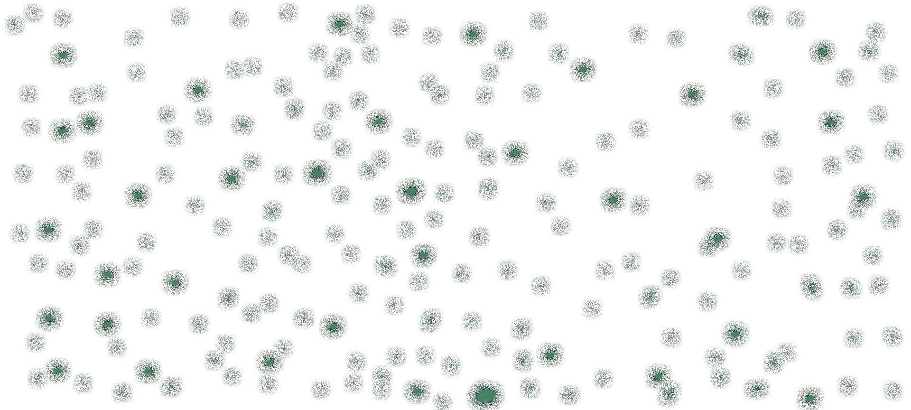

Proslulý harpunář Pyke z bilgewaterských Vražedných doků měl najít smrt v břiše obří žravuchy…
ale přesto se vrátil.
Nyní se plíží vlhkými uličkami a průchody města, jež mu dříve bylo domovem, a používá své nově nabyté nadpřirozené dary k tomu,
aby rychle a krvavě skoncoval s každým, kdo vydělává na zneužívání slabosti ostatních.
Ve městě obývaném hrdými lovci příšer se náhle objevila příšera, která loví je.